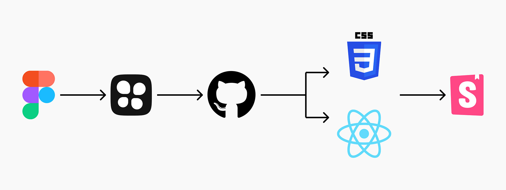
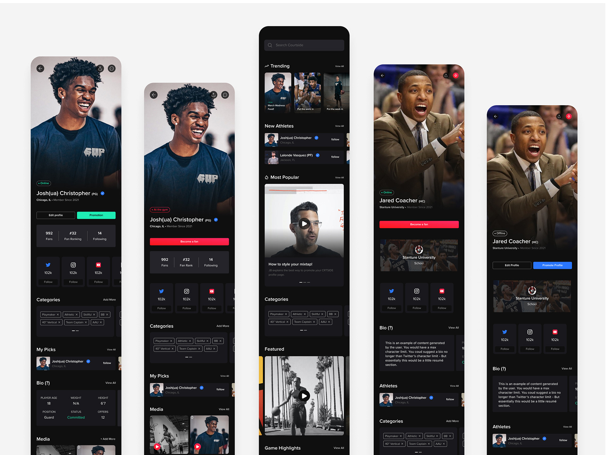

Crtside
0-1 Design System and documentation for a sports app
Crtside's CEO hired me as a freelancer to build a design system and use the components and language from the design system to build the mobile app. Crtside is a consumer social media-like application for High School basketball athletes to land college scholarships and play at the college level. Scouts and coaches can also sign up for the application to watch these high school stars.

How we as a team translated the Figma Design System into React Native and CSS code
To ensure our code was synched with our design tokens in the Figma file, I used Tokens Studio to push any changes into Github. Then, the developers would build pixel-perfect components and push them to storybook for reuse.

Documentation was important
It was so important that we document all of the design systems, the behaviors for each component, and how they should and shouldn't be used.
We used Notion for all the documentation so future designers or developers could see this information and understand how to use the design system.
